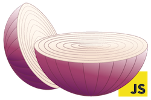

OnionSkin
is a multi-layer cache manager library
that works with Node.js and vanilla javascript
is a multi-layer cache manager library
that works with Node.js and vanilla javascript
You can install it with bower
$ bower install onionskin
Then all you need to do is include it on the page and require it
<script src="bower_components/onionskin/dist/onionskin.js"></script>Or you can install it via npm
$ npm install onionskin
Either way, after that all you need to do is require it and start caching!
var OnionSkin = require('onionskin');// Initialize a pool
var pool = new OnionSkin();
pool.get('my/key/path').catch(function (err) {
// Data is either inexistent or expired
// Generate new data, save it and return
return slowFuncThatReturnsPromise().then(this.save);
}).then(function (data) {
console.log(data);
});The code above is a short version for:
var item = pool.getItem('my/key/path');
// OnionSkin.CP_NONE is the default Cache Policy
item.get(OnionSkin.CP_NONE).then(function (data) {
item.isMiss().then(function (missed) {
if (missed) {
// Cache missing or expired
item.lock(); // Async lock to prevent stampede
actuallyFetchData(function (data) {
item.set(data); // Actually store data on cache (async)
callback(data); // Return data
});
} else {
// Cache is ok!
callback(data); // Return data
}
});
});var ephemeral = new OnionSkin.Drivers.Ephemeral();
var localStorage = new OnionSkin.Drivers.LocalStorage('my-custom-namespace');
var indexedDB = new OnionSkin.Drivers.IndexedDB('my-custom-dbname');
// Config info available below
var redis = new OnionSkin.Drivers.Redis();
var memcached = new OnionSkin.Drivers.Memcached();
// The pool will read the drivers in the order they are specified (and write in reverse order)
// All the unavailable drivers will be filtered out by default
var clientPool = new OnionSkin([ephemeral, localStorage, indexedDB]);
var serverPool = new OnionSkin([ephemeral, memcached, redis]);OnionSkin's idea is to provide consistency exposing exactly the same structure on the browser and on node.js, for that it is compiled with Browserfiy and exposes itself through require.
The only dependency right now is Bluebird, a promise library that is also expose through require on browser.